UDN
Search public documentation:
ParticleSpriteSubUVEmitterTutorialJP
English Translation
中国翻译
한국어
Interested in the Unreal Engine?
Visit the Unreal Technology site.
Looking for jobs and company info?
Check out the Epic games site.
Questions about support via UDN?
Contact the UDN Staff
中国翻译
한국어
Interested in the Unreal Engine?
Visit the Unreal Technology site.
Looking for jobs and company info?
Check out the Epic games site.
Questions about support via UDN?
Contact the UDN Staff
パーティクル SubUV チュートリアル
概要
新しいパーティクル システムの作成
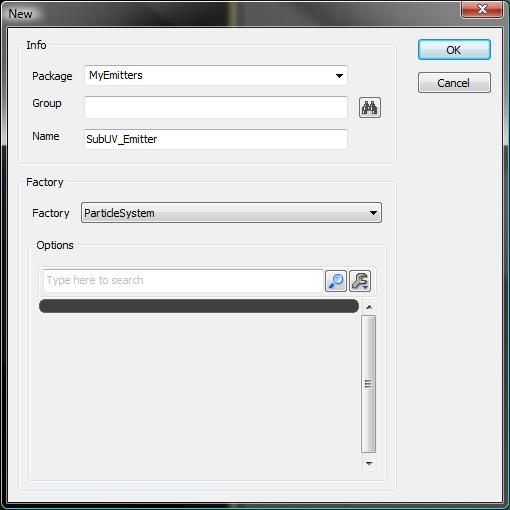
以下の情報を入力します。| Package | MyEmitters |
| Group | <空白のまま> |
| Name | SubUV_Emitter |
| Factory | ParticleSystem |
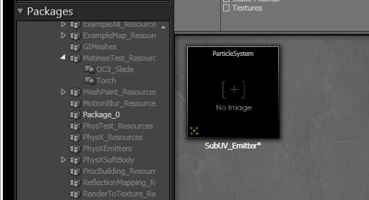
テクスチャのインポート

ParticleSubUV マテリアルの作成
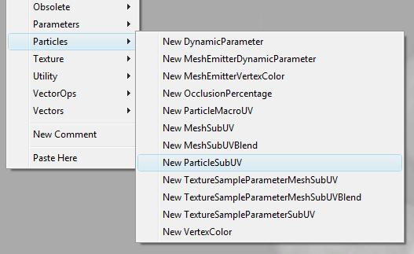
エディタの中に、下図のようなマテリアル表現ウィジェットが表示されます。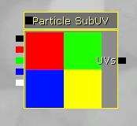
次の手順は、SubUV 表現をマテリアルの出力に「接続」することです。この単純な例では、下図のように、RGB 出力を Diffuse 入力、アルファ出力を Opacity に接続するだけです。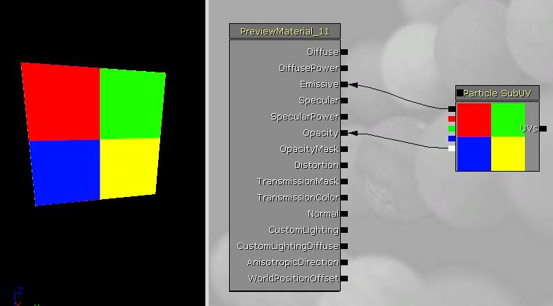
パーティクルの描画方法によっては、必要に応じて、マテリアルをブレンド モードに設定することもできます。ここでは、「BLEND_Translucent」を使うので、下のスクリーンショットのように選択を行います。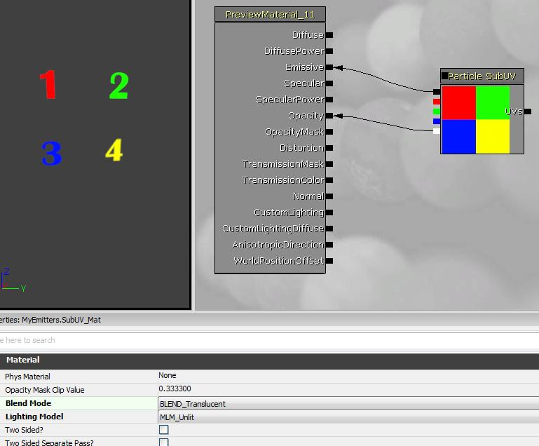
現在のビュー
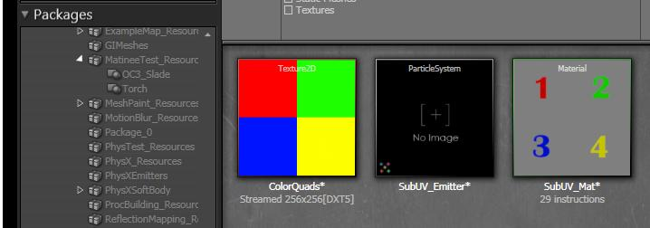
パーティクル SubUV エミッタの作成
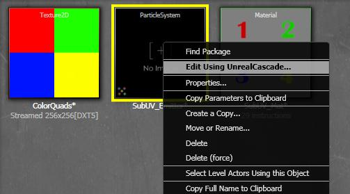
カスケードが開いたら、下図のように、「emitter bar」を右クリックしまて、「New ParticleSpriteEmitter」を選択します。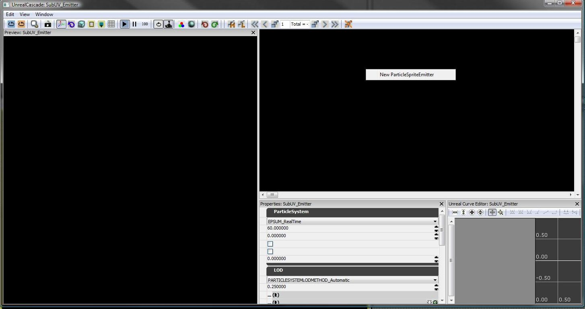
この時点で、カスケードの中には下図のようなビューが表示され、プレビュー ウィンドウの中には新たに作成されたエミッタが表示されているはずです。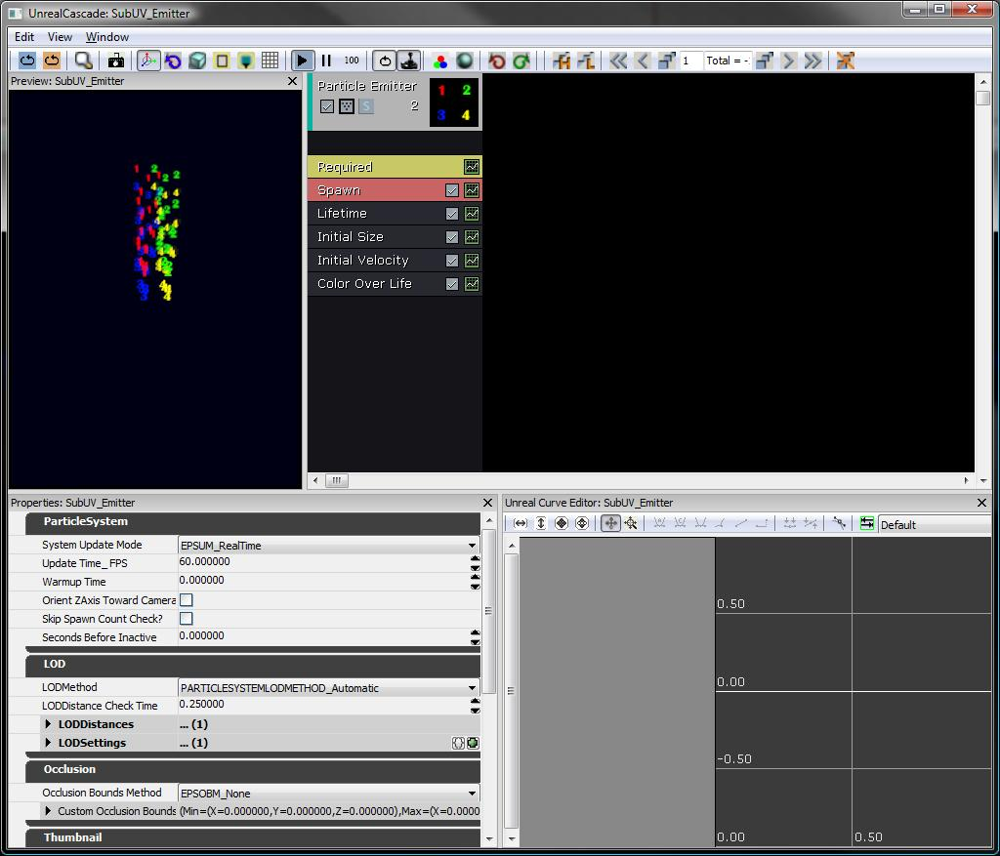
エミッタの基底クラスには、補間法 (InterpolationMethod) や、テクスチャ用の部分画像の水平方向 (Horizontal) 垂直方向 (Horizontal and Vertical) の数など、SubUV 関連の設定が含まれています。これらの情報は、下図のように、エミッタ プロパティ ウインドウの「SubUV」のところに含まれています。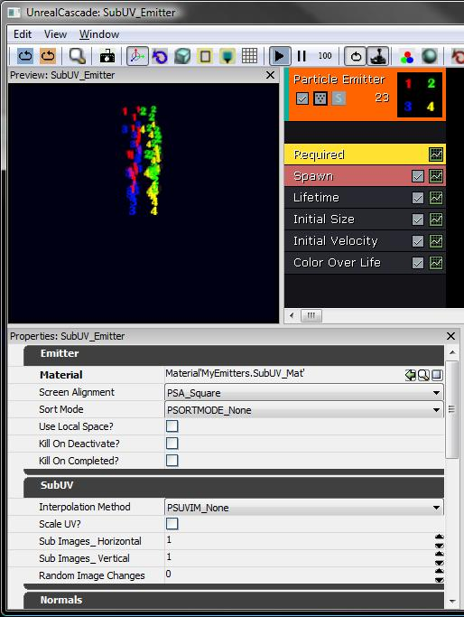
SubUV パラメータの設定
| SubImages_Horizontal | 2 |
| SubImages_Vertical | 2 |
| InterpolationMethod | PSSUV_Linear |
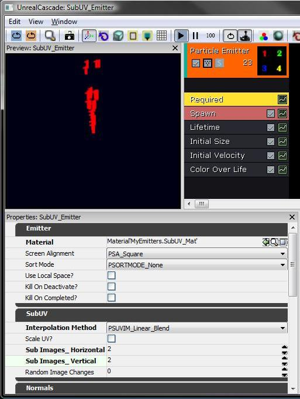
ご覧の通り、部分画像のデフォルトのインデックスは定数0なので、エミッタは、指定されたテクスチャ用に「最初の」部分画像を選択します。部分画像選択の設定
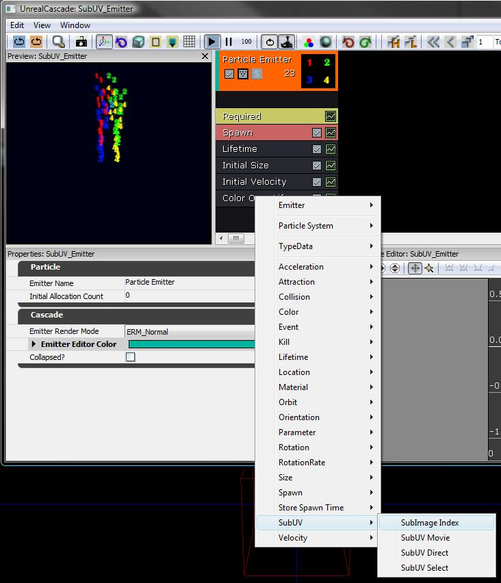
青い矢印をクリックし、リストから選択することによって、分布を Constant Curve (一定な曲線) に変更する。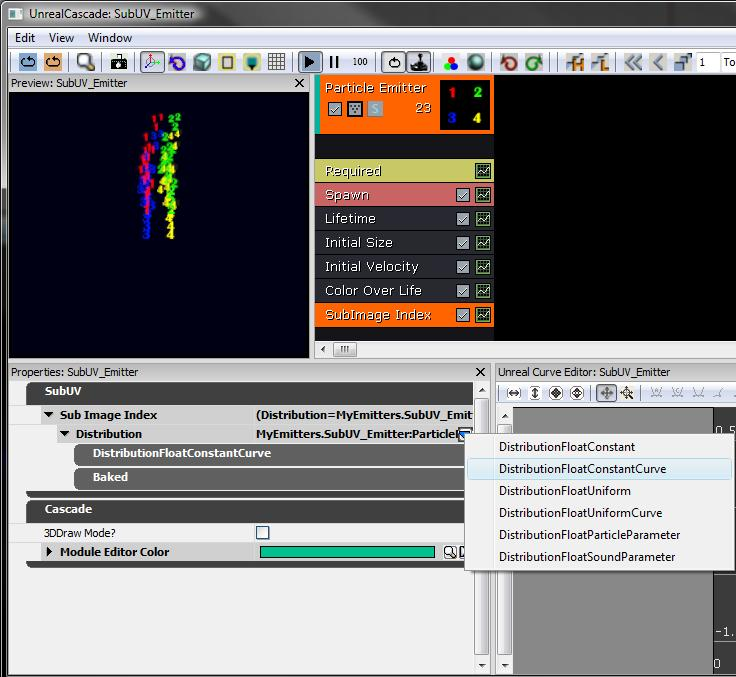
最後に、分布型をなめらかな曲線に変更します。エミッタの SubImage Index モジュールの上の、小さい緑の「ボタン」をクリックして、カーブ エディタに曲線を追加します。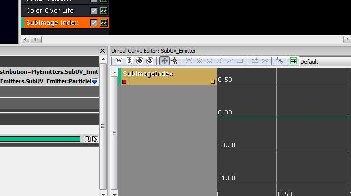
以下のデータ点をもつ曲線を追加します。| Time | Value |
| 0.00 | 0.00 |
| 0.75 | 3.01 |
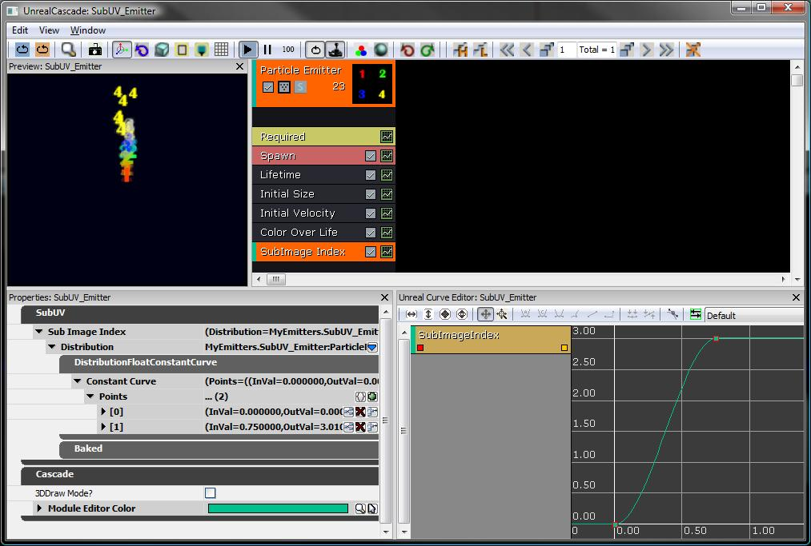
MyEmitterパッケージは、 ここ から入手できます。